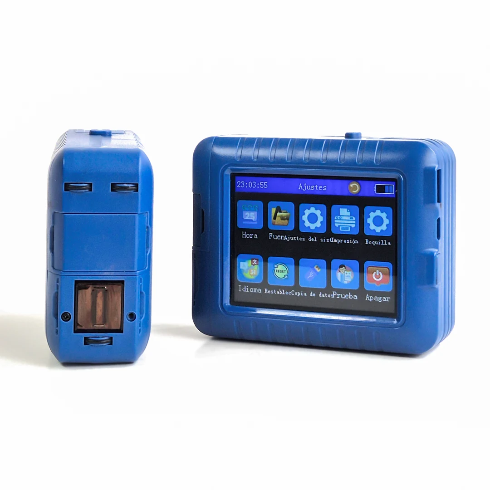
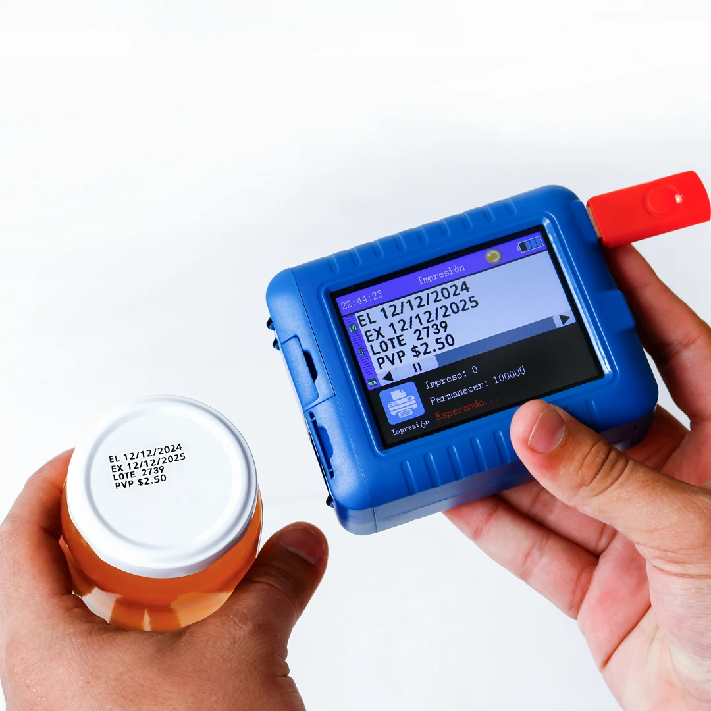

S70 / OPERACIÓN Y CUIDADO
Cartucho S70: cómo organizar el consumo, el cuidado y la reposición de tu M1
El consumible es parte del proceso de codificación. Una plantilla controlada, un registro de producción y una rutina de cuidado ayudan a pedir la reposición con tiempo y a identificar la causa de una impresión irregular.

Identifica el consumible antes de instalarlo
El S70 es el cartucho de tinta solvente compatible con la M1 que comercializa Rigel México. Cuando solicites una reposición, indica ambos modelos y comparte una fotografía de la etiqueta del cartucho utilizado. Tener un registro evita confundir referencias y facilita revisar la aplicación con el equipo comercial o técnico.
Antes de instalar, revisa las indicaciones suministradas con el cartucho y el equipo. Manipula el consumible con cuidado y no fuerces su colocación. Si observas daños, una etiqueta que no corresponde o una condición distinta a la esperada, consulta al equipo de Rigel antes de continuar.
Por qué el rendimiento depende del mensaje
Un cartucho no produce la misma cantidad de unidades con cualquier contenido. Una fecha breve y un mensaje con varias líneas, logotipo y código utilizan coberturas diferentes. También influyen las impresiones de prueba, los rechazos, las pausas y las condiciones de operación. Por eso, una cifra aislada de impresiones no describe todos los procesos.
Para estimar tu consumo, conserva una plantilla representativa y registra unidades aceptadas, pruebas y rechazos por periodo. Relaciona estos datos con las reposiciones efectivamente realizadas. Si cambias el diseño, compara el nuevo resultado con el anterior y actualiza tu previsión; no traslades automáticamente el rendimiento de una presentación a otra.
| Registro | Para qué sirve |
|---|---|
| Plantilla y presentación | Separar mensajes con coberturas distintas. |
| Unidades aceptadas | Conocer la producción útil obtenida. |
| Pruebas y rechazos | Incluir consumo que no termina en producto despachado. |
| Fecha de instalación y reposición | Relacionar el periodo de uso con el ritmo de producción. |
| Cambios o incidencias | Interpretar diferencias entre periodos. |
Establece una rutina al iniciar, pausar y terminar
Al iniciar, confirma que la plantilla corresponde al producto y realiza una muestra antes de continuar. Observa que el mensaje esté completo y que su ubicación coincida con el patrón aprobado. Un control breve en ese momento evita descubrir un defecto después de procesar muchas unidades.
En pausas y al finalizar, sigue las instrucciones específicas de protección y almacenamiento del S70. No adoptes una temperatura, un tiempo máximo sin uso o un método de limpieza de otro cartucho por analogía. Mantén el consumible protegido de golpes y contaminación y conserva sus instrucciones junto al puesto de trabajo.

Una impresión irregular no siempre significa falta de tinta
Si aparecen líneas incompletas, deformaciones o impresiones que se transfieren, separa el síntoma antes de decidir una reposición. Comprueba si el problema ocurre en todas las muestras, en una zona específica del empaque o solo al cambiar la forma de operar. Revisa también si se modificó el material o su recubrimiento.
Compara una impresión reciente con una muestra aprobada y registra qué cambió. Evita frotar la zona de impresión del cartucho con materiales o líquidos no indicados por el fabricante. Si la causa no es clara, detén los ajustes y comparte el caso con soporte: una fotografía enfocada y una descripción ordenada aportan más que varios cambios sin registro.
Calcula tu punto de pedido con datos propios
Planifica la reposición a partir del consumo observado y del plazo de abastecimiento confirmado por Rigel. Una forma de organizarlo es cubrir el consumo previsto durante ese plazo y añadir una reserva definida por tu empresa según la variación de pedidos. Mantén separados los datos medidos de las estimaciones.
Actualiza la previsión cuando aumente la producción, incorpores una presentación o cambies la cobertura del mensaje. La disponibilidad y el plazo se consultan al solicitar el pedido; no conviene construir el plan sobre una entrega supuesta. Identifica los consumibles almacenados y utiliza un orden de rotación acorde con sus instrucciones.
Prepara una consulta que permita actuar
Para reposición, indica M1, S70, cantidad requerida y ciudad de entrega. Para una revisión técnica, añade una foto del cartucho y de la impresión, el material, el mensaje utilizado y cuándo comenzó el síntoma. Explica si ocurre al iniciar, después de una pausa o de forma continua.
Con ese contexto, Rigel México puede orientar la siguiente revisión y ayudarte a mantener el proceso ordenado. El objetivo es que la reposición responda al consumo real y que cada intervención tenga una causa identificada, con menos incertidumbre para tu siguiente jornada de codificación.
Preguntas frecuentes
¿Existe una cantidad fija de impresiones por S70?
El rendimiento depende del contenido, cobertura y condiciones de uso. Registra tu aplicación para planificar la reposición con datos de tu propia producción.
¿Qué debo enviar si falta parte del mensaje?
Fotografía de la impresión, material, plantilla, modelo de cartucho y momento en que aparece el síntoma. Evita aplicar métodos de limpieza no indicados.
Hablemos de tu aplicación
Comparte tu material y el mensaje que necesitas imprimir con nuestro equipo en México.
Contactar a Rigel